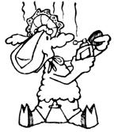

Mother's Down-Home Country Lore "Handling heavy rounds of barbed wire is an easy two-person job," notes Bob Whitlock of Fletcher, Oklahoma. "All you have to do is poke a pipe section through the spool's center hole, have each worker grab an end of the conduit, and simply unroll your fencing.
"But last fall I had to tackle the same task alone. First I tried the Charles Atlas, lift-the-pipe-by-yourself method (groan!), and then took a crack at the kick-the-spool-from-behind-and-watch-!t-zig-zag-over-the-whole-countryside technique. Frustrated by those disasters, I even tried attaching the pipe/spool rig to my pickup truck and driving down the line . . . but the dang wire snagged and tangled like a beginner's fishing tackle.
"Finally, though, I did something right: I tied a piece of rope to each pipe end and-walking backward-pulled the wire roll while holding my homemade steering traces!"
While Bob Whitlock found that unrolling barbed wire by yourself ain't always easy, John and Hope McKinley know that securing the thorny line against fenceposts-without any help-is no cinch, either. So every time one of the Niangua, Missouri couple has to "string up" alone, he or she first cuts a two-foot-long, Y-shaped sapling branch ... and notches the "lonely end" of that wood with a chain saw. Then when the fence-laying McKinley comes to a post, he or she grabs a barb of the wire in the sapling's notch, puts the double-pronged stick end on the ground, and leans against the wire holder to keep the to-be-fastened line taut. The stratagem lets John or Hope keep both hands free to place the staple and hold the hammer. . . and makes fence-tacking a smooth one-manor one-woman-job.
Looking for a safe-to-have-around rat poison? Jim Thorgesen just places jar lids filled with some carbonated soda pop (the Mission Hills, Californian's varmints like Coca Cola) in strategic areas. The rodents eagerly slurp up the sugary liquid . . . but, since they can't burp, eventually "pop" and die. And-you may well wonder-does Jim's bubbly exterminator really work? Well, a friend of his tried the ploy in a service station one night ... and next morning shoveled away three bushels of rats!
Ingrown toenails aren't a problem for everyone, but if they plague you, take Don Davis's foot-healing advice. Don who lives in Los Alamitos, California-discovered a costless remedy when he took a small file and some rough sandpaper and thinned off his nails' thick centers. The sanding instantly relieved the painful pressure . . . and Mr. Davis has had no trouble with ingrown toenails since!
Simpson, North Carolina's Thomas Butler has discovered a way to avoid that age-old calamity of cutting and recutting the bottoms of chair legs-in an attempt to make the piece of furniture sit level-until there's nothing left to trim! Tom simply places all four legs of a "wobbly" object in one large pan of water (making sure the top surface of the piece is horizontal), marks the waterline on all four supports, saws the legs off at the points indicated ... and levels his chair or stool on the very first try.
Do you want to get your money's worth out of a penny and make some heavy duty buttons at the same time? William Tilley of Apex, North Carolina killed those two birds at once by drilling and sanding four small holes in each one of a batch of copper coins, and using the "little Lincolns" for shirt fasteners. The attractive buttons never wear out. Not only that, but-if William ever loses one-he can get a matching disc for only one cent!
Paul and Mary Tretiak-who live outside Georgetown, New York-have a handy tip for folks who hate the mess involved in blacking a wood stove: "Put a plastic bread bag over your hand before you start the cleaning job. You'll be able to shine all the heater's sides, corners, and crevices . . . yet not get your hands as black as the stove. Then, once you're done, turn the bag inside out-leaving the rag inside and you can neatly store the whole kit and caboodle away until your next `polishin' party'."
"No hoof, no horse," says Kathy Hartley, and Kathy's maxim points out just how disastrous improper foot care can be to your steeds and mares. So the Bothell, Washington horsewoman offers two simple remedies for the most common hoof-destroying ailments: cracks and thrush.
"If your horse has a ring of white flakes around very dry hooves, the animal has cracks. To treat the problem, first clean the hoof thoroughly with a pick, and then paint the entire foot-three times a week-with used motor oil. "The opposite problem develops if of Dobbin has mudcaked pads that have been getting too much moisture. The animal may then be stricken with the rubbery black hoof condition known as thrush. Get rid of this foul-smelling rot by once a day-spraying the pre-cleaned feet with a half-and-half mixture of bleach and water."
Susan Feldhake of Watson, Illinois has often resorted to the laborious task of bottle-feeding newborn lambs that wouldn't suckle. That is, she did until she found an especially feeble infant and inadvertently discovered a way to promote natural nursing.
As Susan tells it, "Because I had recently drowned a newborn by squirting milk down its lungs, I didn't want to bottle-feed this youngster. So instead, 1 made a desperate hour-long attempt to join the mother and child, only to give up and leave the helpless creature out in the pasture with the other sheep.
"A moment later, a week-old lamb came over to the dying animal, bleated several times, and then ran to its mother and sucked intently. To my amazement, the abandoned lamb shakily got to its feet, went over to its own ewe, and began nursing!
"I don't know if such peer-pressure tactics work with every nonsuckling newborn, but I sure tried the trick on the next reluctant nurser I had ... and its young comrades showed it 'how-to', as well!"
Another frustrating sheep-raising problem can occur when your new lamb is willing to nurse but the ewe won't allow it to! Allene Hoffman solved this quandary, which most often oc curs when a twin-bearing mother will nurse only one of her offspring, by dousing both the young'uns with inexpensive perfume. The Walla Walla, Washington woman is especially proud of her solution because (as she says), "It's very satisfying to watch a picky ewe sniff and sniff her young to find out who's who, then finally give up and settle down to doing what she should have done in the first place!"
What substance is so inexpensive that it sits on most everybody's kitchen shelf ... yet so amazingly versatile that many folks call it a genuine elixir?
Why, plain of household vinegar, that's what! In fact, so many MOTHER readers have sent in practical uses for "sour wine" that we just had to pass on some Down-Home Vinegar Lore:
[1] To keep your fresh cheese and bacon from molding, simply follow the advice of Grand Forks, North Dakota's John B. Roomer . . . and wrap the foods in cloths that have been moistened with vinegar.
[2] Both John Ufer and Linda Raines use the fermented liquid to freshen up smelly or smoke-filled rooms. John-a Traverse City, Michigan reader-places a small, uncapped bottle of the deodorizer in an out-of-the-way spot . . . while Louisville, Mississippi's Ms. Raines boils up an aromatic brew of vinegar spiced with whole cloves.
[3] Debra Powers says that one-half cup of the vinegar mixed with a quart of warm water makes a good window cleaner. The Jacksonville, Vermonter also adds a small amount to soapy dishwater . . . to cut grease and make plates and silverware sparkle.
(4] Speaking of cleaning, Lorrie Bartolini uses a quartercup of the condiment-instead of bleach-in her clothes washer. The St. Louis, Missouri mother finds that the "salad dresser" is an especially good-as well as nonirritating - cleanser for her baby's diapers!
[5] If you're working in the shop, you might want to heed a tip from the of water-injection wizard himself ... Winchester, Virginia's Pat Goodman (see MOTHER NO. 59, page 46). He knows from experience that the easiest way to remove rusty scale from auto parts is to soak the aged pieces in-yep!-vinegar.
[6] And lastly, M.H. Bryant of San Diego, California has found that the acid liquid is good for easing the pain of bug bites and sunburn . . . unplugging kitchen sinks (heat the "old wine" up to boiling first) . . . scouring pots and pans (mix the vinegar with salt for this job) . . . and-if you drink one teaspoon of the liquid in a half-cup of warm water relieving an upset stomach!
OK. Now it's YOUR turn! We've all come up with some practical, down-home, time-tested solutions to the frustrating little problems that bug us every day. Let's hear YOUR best "horse sense"ideas so we can share 'em and all benefit.
Send your pointers to Down-Home Country Lore, P.O. Box 70, Hendersonville, North Carolina 28739, and I'll make sure that the most useful of the suggestions will appear in upcoming editions. A one-year subscription-or a one-year extension of an existing subscription-will then be sent to each contributor whose tip does get printed in this column. MOTHER.
|
 |
|
|